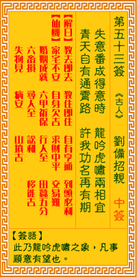

观音灵签第五十三签 【刘备招亲】 |
 | |||
失意翻成得意时 龙吟虎啸两相宜 青云有路终须到 许我功名必可期 |
||||
| 【吉凶】 | 上上签 | 【宫位】 | 子宫 | |
| 【签语】 | 此卦龙吟虎啸之象，凡事顺意有望也。 | |||
| 【解曰】 | 教去即去 教住即住 自有亨通 到头必利 | |||
| 【仙机】 | 此签家宅不安，自身欠吉，求财中平，交易难，婚姻成就，六甲祈保，行人至，寻人至， 田蚕五分 六畜损，讼和，移徙吉，失物见，病 安，山坟吉。 | |||
| 【详解】 | 从前的失意已转变为得意，犹如龙吟虎啸两相得宜;平步青云、大道亨通的日子终将会来临，届时盼望的功名利禄必然也能如愿以偿。 教去即去，教住即住，口有亨通，到头必利。此签龙吟虎啸之象，凡事求谋吉昌。 本签为龙吟虎啸之象也。凡事谋略之。吉昌者也。失意翻成得意时。黑暗之去也黎明至。光明也。于是青云中有路。终于到。天神允我功名可期。易言之。教去即去教。住即住口有亨通到头必利者。一片虔诚祈保之。必有帮助于君尔。 此签有”收放自如”之意。提醒当事人，凡事适度地拿捏分寸。有时人往往太在意别人对自己的看法，所以刻意保持身段，却因此放不开，说话做事也相对地被局限。有时人却因为太过随性，反而变成我行我素，又会让人觉得放肆且不知礼法。其实该严肃时就要严肃，不要仍然嘻皮笑脸、东张西望，会让人觉得举止轻浮、三心二意。该放松时就要放松，不要一昧墨守成规、过于拘谨，又会让人觉得难以相处、不知变通。应视情况场合，调整本身的行为举止。说该说的话，做该做的事。 | |||
| 【典故】 | 三国时，蜀主刘备因借荆州不还，东吴周瑜向孙权献计，把孙权的妹妹嫁给刘备，但一定要刘备过江来招亲，然后把刘备软禁起来不放。 可是刘备得到孔明的锦囊妙计，又有赵子龙保护着，在江东招亲，安然无事。过了一些日子，说服了孙夫人，不辞而别，离开东吴。诗曰：《周郎妙计安天下，赔了夫人又折兵》 。 | |||